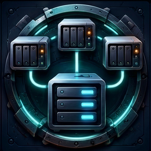
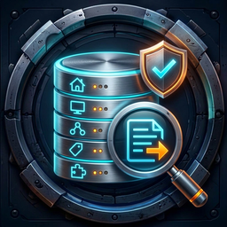

Was ist schon da –
und was wollen wir anders machen?
Der Home-Assistant-Markt hat bereits starke Integrationen und Apps. HA Secure beansprucht nicht, vorhandene Lösungen pauschal zu ersetzen. Die Abgrenzung beschreibt belegte Projektziele und kennzeichnet offene Implementierung.
Synology File Connector
Beta · 0.1.0-beta.3Vergleich & Abgrenzung
Die native Synology-DSM-Integration deckt bereits NAS-Status, Surveillance Station und eine File-Station-Backup-Zielintegration ab. Home Assistant unterstützt außerdem Netzwerk-Speicher als Backup-Ziel. Der HA Secure Connector zielt ergänzend auf kontrollierte Dateioperationen über die DSM-API – nicht auf einen Ersatz der nativen Backup-Funktionen.
English summary
The native Synology DSM integration already covers NAS status, Surveillance Station and a File Station backup location; Home Assistant also supports network storage as a backup target. The HA Secure connector is intended to add controlled DSM API file operations, not replace native backup features.
Reifegrad: Beta (0.1.0-beta.3, Code auf main, Beta-Paket-Workflow erfolgreich); vom Betreiber berichtete Praxistests in einer Synology-HA-Test-VM. Exakte Funktionsparität und breitere DSM-Kompatibilität sind nicht belegt.

Universal NAS Connector
Beta-Vorstufe · 0.1.0-beta.0Vergleich & Abgrenzung
Home Assistant kann Netzwerkfreigaben bereits als Backup-Ziele verwenden und bietet herstellerspezifische Integrationen. Der Universal Connector ist als abstrahierte Adapterebene geplant. Herstelleradapter und Dateioperationen sind im aktuellen Scaffold noch nicht implementiert.
English summary
Home Assistant already supports network shares as backup targets and offers vendor-specific integrations. Universal NAS is planned as an abstraction layer for adapters. Vendor adapters and file operations are not implemented in the current scaffold.
Reifegrad: Design scaffold only; no NAS adapter currently provides a working connection.
Repo Config Guard
Scaffold · 0.0.1Vergleich & Abgrenzung
Home Assistant bietet Konfigurationsprüfungen und Editoren; Git liefert Versionshistorie. Repo Config Guard soll diese Bausteine um eine strukturierte Policy-, Abhängigkeits- und Lifecycle-Prüfung mit Diff- und Rollback-Vorbereitung ergänzen. Der Funktionsumfang ist noch in Planung.
English summary
Home Assistant offers configuration checks and editors, while Git provides version history. Repo Config Guard is intended to add structured policy, dependency and lifecycle checks with diff and rollback preparation. The product is still at design stage.
Reifegrad: Design / initialization; no production-ready validation or update engine is claimed.
AI Diagnostics
Scaffold · 0.1.0Vergleich & Abgrenzung
Home Assistant kann Diagnosepakete bereitstellen; AI Task stellt generische KI-Bausteine für Automationen und Oberfläche bereit. HA Secure will beides nicht ersetzen, sondern eine spezialisierte Diagnosepipeline mit Evidenz, Unsicherheitskennzeichnung und menschlicher Freigabe aufbauen.
English summary
Home Assistant can provide diagnostic downloads, and AI Task exposes general-purpose AI building blocks for automations and the interface. HA Secure does not aim to replace them; it aims to add a specialized evidence-based diagnostic pipeline with uncertainty labeling and human approval.
Reifegrad: Design / initialization; AI provider, data flow and retention controls are not yet implemented.
Presence Simulator
Scaffold · 0.0.1Vergleich & Abgrenzung
Es gibt bereits Community-Lösungen für zufällige Lichtaktivität und für die Wiedergabe historischer Zustände. Presence Simulator zielt auf eine GUI-basierte Profilverwaltung mit mehreren Geräteklassen, Bedingungen, Konflikterkennung und sicherer manueller Übersteuerung. Diese Funktionen sind noch nicht implementiert.
English summary
Existing community projects already provide randomized light activity and historical state replay. Presence Simulator is planned around GUI-managed profiles, multiple device classes, conditions, conflict detection and safe manual override. These features are not implemented yet.
Reifegrad: Design / initialization; profile schema and execution engine remain to be specified.
WireGuard Client App
Design · in ArbeitVergleich & Abgrenzung
Die verbreitete Community-WireGuard-App stellt einen Server bereit; separate Community-Projekte adressieren auch Client-Betrieb. HA Secure verfolgt einen eigenen Client-/Control-API-Aufbau mit strikten Routinggrenzen. Der Stand der Produktdokumentation beschreibt noch keinen produktiv nutzbaren Tunnel; das Produkt ist nicht für den produktiven Einsatz freigegeben.
English summary
The widely used Community WireGuard app provides a server, while separate community projects also target client operation. HA Secure is developing its own client and control API with strict routing boundaries. The current product documentation does not describe a production-ready tunnel; the product is not approved for production use.
Reifegrad: Work in progress (no code on main); tunnel, HAOS, kernel routing and AppArmor behavior still require live validation.
WireGuard Client Integration
Scaffold · 0.0.2Vergleich & Abgrenzung
Statt Netzwerkrechte in die Home-Assistant-Integration zu verlagern, soll diese nur eine versionierte, authentifizierte lokale API der App ansprechen. Die Integration selbst ist noch nicht lauffähig.
English summary
Rather than moving network privileges into the Home Assistant integration, it is designed to use only a versioned, authenticated local API exposed by the app. The integration itself is not yet operational.
Reifegrad: Design / initialization; depends on successful validation of the separate client app and its API.
HA Secure Guard
Scaffold · 0.0.1Vergleich & Abgrenzung
Alarmo bietet bereits eine umfangreiche browserbasierte Alarmoberfläche, Sensorzuordnung, mehrere Scharfmodi, PINs und Aktionen. HA Secure Guard positioniert sich als übergeordnetes, modular erweiterbares Sicherheitsfundament mit getrennten Rollen und Schnittstellen. Es befindet sich noch in der Architekturphase.
English summary
Alarmo already offers a mature browser-based alarm panel, sensor mapping, multiple arm modes, PINs and actions. HA Secure Guard is positioned as a broader modular security foundation with distinct roles and extension interfaces. It remains at architecture stage.
Reifegrad: Architecture / initialization; no production-ready alarm runtime or dashboard is claimed.
Certificate Guardian
Beta · 0.1.0-beta.2Vergleich & Abgrenzung
Die native Certificate-Expiry-Integration überwacht Ablauf und Gültigkeit; die offizielle Let’s-Encrypt-App führt ACME-Ausstellungen aus. Certificate Guardian soll die kontrollierte Orchestrierung verbinden. Auf main liegt eine Beta-Vorabversion (0.1.0-beta.2); ACME-Orchestrierung, Challenge-Erreichbarkeit und Routeraktionen sind nicht implementiert.
English summary
The native Certificate Expiry integration monitors certificate validity and expiry; the official Let’s Encrypt app performs ACME issuance. Certificate Guardian aims to provide guarded orchestration between them. Only documentation exists on main so far; ACME orchestration, challenge reachability and router actions are not implemented.
Reifegrad: Architecture/specification phase; no integration code on main.

Inventory Exporter
Beta · 0.1.0-beta.3Vergleich & Abgrenzung
Home Assistant stellt Diagnosepakete und Registries bereit. Der Inventory Exporter erzeugt zusätzlich einen strukturierten, read-only Snapshot von Geräten, Entities, Areas, Labels und Integrationen als lokalen JSON-Export mit standardmäßig aktivierter Redaktion sensibler Angaben.
English summary
Home Assistant provides diagnostic downloads and registries. The Inventory Exporter adds a structured, read-only snapshot of devices, entities, areas, labels and integrations as a local JSON export with sensitive-data redaction enabled by default.
Reifegrad: Beta (Code auf main, Beta-Paket-Workflow erfolgreich); Laufzeittests in einer Home-Assistant-Testinstanz stehen aus.
Repo Updater
Beta · 0.1.0-beta.7Vergleich & Abgrenzung
HACS und Home Assistant bieten bereits Update-Mechanismen. Repo Updater überwacht GitHub-Repositories und stellt ausgewählte Revisionen mit festen Commit-Referenzen und Prüfsummen im Staging bereit. Installation und produktive Synchronisierung sind bewusst gesperrt.
English summary
HACS and Home Assistant already provide update mechanisms. Repo Updater monitors GitHub repositories and stages selected revisions with immutable commit references and checksums. Installation and production synchronization are intentionally locked.
Reifegrad: Beta (Code auf main, Beta-Paket-Workflow erfolgreich); Laufzeittests in einer Home-Assistant-Testinstanz stehen aus.
Dokumentation und etablierte Projekte
- Home Assistant: Synology DSM – NAS-Status, Surveillance Station, File-Station-Backup-Ziel.
- Home Assistant: Backups – native Backup-Orchestrierung und Netzwerkziele.
- Home Assistant: Google Drive · Samba Backup.
- Home Assistant: Certificate Expiry · Official Let's Encrypt App.
- Presence Simulator · Presence Simulation.
- Community WireGuard App (server) · WireGuard Client add-on.
- Alarmo – UI, Sensoren, PINs, Alarmmodi und Aktionen.
- Home Assistant: AI Task · Home Assistant: Diagnostics.
Stand: 24.11.2026. Funktionsumfang und Verfügbarkeit von Drittprojekten können sich ändern. Die Gegenüberstellung ist eine Produktpositionierung, kein vollständiger Marktvergleich und keine Sicherheitszertifizierung. Alle HA-Secure-Projektstände sind auf der Startseite gekennzeichnet.